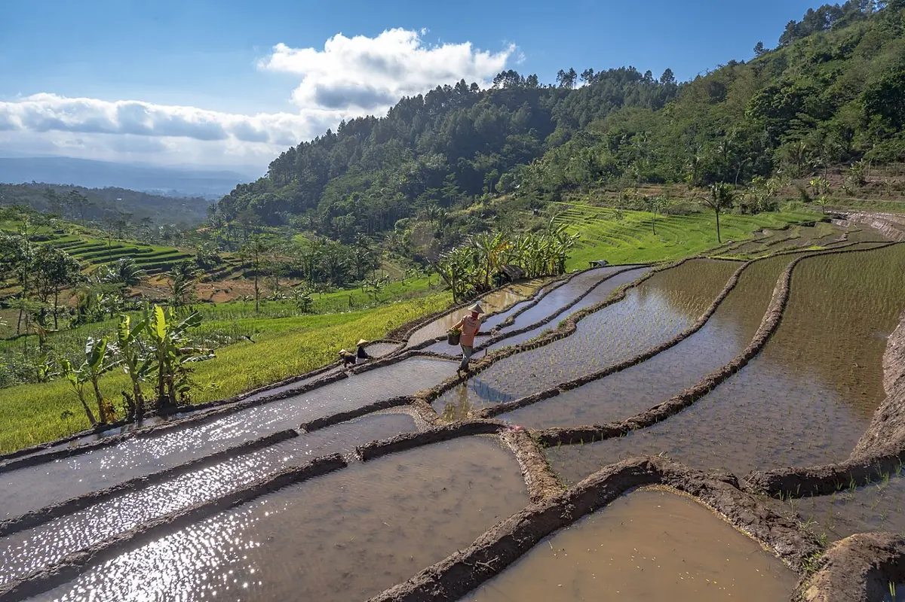

Video
Video
Edukasi kebencanaan
Mengenal dan menghadapi longsor
Tanah di lereng bisa bergerak turun. Kenali penyebabnya, hafal 5 tandanya, dan tahu apa yang harus dilakukan sebelum, saat, dan sesudahnya.

01
Pengertian
Apa itu longsor dan apa penyebabnya?

Longsor terjadi ketika tanah di lereng yang labil bergerak turun dan menimbulkan bencana, terutama bagi warga yang tinggal di tempat lebih rendah. Badan Geologi menyebutnya gerakan tanah longsor.
Pemicu
Tiga hal yang disebut sumber resmi
Hujan intensitas tinggi
BNPB menyebut hujan yang berlangsung beberapa hari. Menurut Badan Geologi, hujan lebat menambah tekanan air di dalam tanah dan menurunkan kekuatannya, sehingga lereng gagal.
Gempa bumi
Getarannya dapat melemahkan kekuatan lereng.
Kegiatan manusia
Misalnya pemotongan lereng dan peledakan di area tambang.
Faktor lereng
Mudah atau tidaknya lereng longsor dipengaruhi oleh
- Kemiringan dan bentuk lereng
- Kondisi geologi
- Kondisi air atau hidrologi di lereng
- Perubahan tata guna lahan
- Kegagalan konstruksi
- Saluran air permukaan yang belum baik
Video
Sumber. BNPB, “Tanah Longsor” (27 Des 2017); Kementerian ESDM/Badan Geologi, “Curah Hujan Tinggi, Masyarakat Diminta Waspadai Gerakan Tanah Longsor” (6 Feb 2018); Kementerian ESDM/Badan Geologi, “Longsor Terjang Desa Pasirlangu, Badan Geologi Ingatkan Ancaman Longsor Susulan” (25 Jan 2026).
02
Waspada
5 tanda bahaya
Kalau kamu tinggal di perbukitan atau dekat tebing, kenali tanda awal ini dan terus pantau keadaan sekitar.

1
Retakan di tanah atau lereng
BNPB: retakan yang sejajar dengan tebing.

2
Mata air baru atau air keruh
Mata air baru muncul, atau air mata air dan sumur tiba-tiba keruh.

3
Pohon atau tiang miring
4
Kerikil berjatuhan dari tebing

5
Suara gemuruh dari dalam tanah
Sumber. BNPB, “Tanah Longsor di Tapanuli Selatan Telan Dua Korban Meninggal” (23 Feb 2025); Badan Geologi, “Tanah Longsor Kembali Terjadi di Ponorogo, Masyarakat Diminta Waspada” (9 Apr 2017).

03
Sebelum
Persiapan sebelum longsor
Sorotan
Hujan deras lebih dari 1 jam? Evakuasi.
BNPB (23 Feb 2025) mengimbau warga mengevakuasi diri ke tempat yang lebih aman bila hujan intensitas tinggi berlangsung lebih dari satu jam.
- Waspadai hujan dengan curah tinggi dan simak informasi tentang hujan serta kemungkinan longsor. BNPB menyebut radio sebagai salah satu sarana.
- Siapkan makanan dan minuman siap saji, senter beserta baterai cadangan, uang tunai secukupnya, dan obat-obatan sesuai kebutuhan.
- Jangan menebang tanaman keras di lereng, jangan menggali lereng secara tegak lurus, dan atur aliran air permukaan di lereng.
- Bersiaplah mengevakuasi diri begitu pihak berwenang menginstruksikannya.
Sumber. BNPB, “Tanah Longsor” (27 Des 2017); Badan Geologi (2017); BNPB, “Tanah Longsor di Tapanuli Selatan Telan Dua Korban Meninggal” (23 Feb 2025).
04
Saat
Saat longsor terjadi
Di dalam rumah
Dengar gemuruh? Keluar.
Segera keluar menuju tempat lapang yang tidak terhalang.
Di luar rumah
Cari tempat lapang.
Perhatikan sisi lereng atau tanah yang longsor.

Selalu
Ikuti arahan BPBD dan petugas setempat.
 Video
Video
Sumber. BNPB, “Tanah Longsor” (27 Des 2017).
05
Sesudah
Setelah longsor

Jangan segera kembali ke rumah.
Daerah bencana dan sekitarnya masih berpotensi longsor susulan, terutama saat dan setelah hujan deras. Warga diminta mengungsi ke lokasi yang aman.
Mau membantu?
Bila diminta membantu evakuasi, pakai sepatu khusus dan peralatan keselamatan, pastikan pijakan cukup kokoh, dan jangan memperburuk keadaan di reruntuhan. Atau tunggu petugas.
Untuk petugasBadan Geologi mengingatkan agar tidak melakukan penanganan atau pencarian korban saat dan sesudah hujan deras, karena risiko longsor susulan masih tinggi.
Sumber. BNPB (27 Des 2017); Badan Geologi (2017); Badan Geologi (25 Jan 2026).
Kontak darurat
BNPB Call Center117
Pusdalops BNPB, 24 jam+62 21 29827444
Bantuan setempat
Aparat desa dan BPBD kabupaten/kota. Kontak BPBD Provinsi Jawa Barat di bpbd.jabarprov.go.id.
Belum tersedia
Yang belum disediakan aplikasi ini
SIAGA Longsor belum memberikan peringatan dini maupun perintah evakuasi. Prediksi harian masih percobaan. Tujuan dan rute evakuasi antardesa belum tersedia. Ikuti arahan BPBD atau petugas setempat.
Catatan sumber. Ringkasan disarikan dari siaran resmi BNPB dan Badan Geologi (Kementerian ESDM). Sebagian sumber berupa berita kejadian, bukan buku panduan. Ringkasan ini tidak menggantikan arahan BPBD dan petugas setempat.